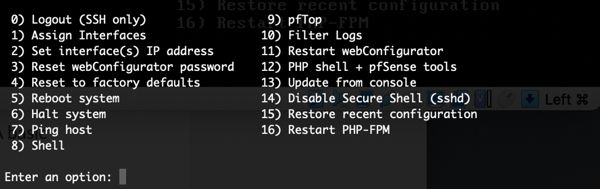
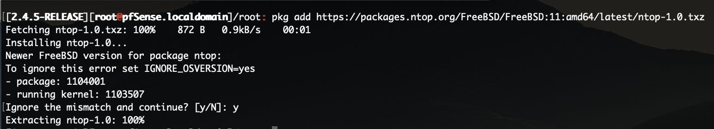
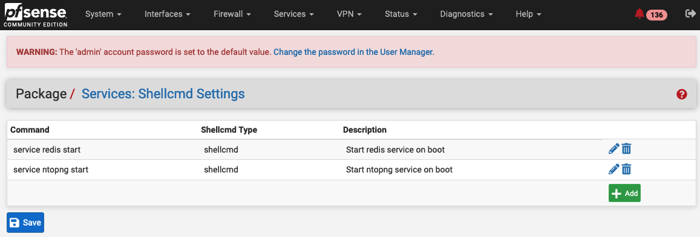

pfSense
ntopng Pro/Enterprise можно установить на pfsense с помощью командная строка. Для этого требуется настройка FreeBSD репозиторий (FreeBSD 14 для pfSense CE 2.7), как описано в https://packages.ntop.org/FreeBSD/.
Предупреждение
ntopng создаст файлы на вашем устройстве pfSense для хранения данных о трафике. Если у вас устройство с ограниченным дисковым пространством, настройте ntopng для хранения на диске только нескольких таймсерий, иначе вы можете заполнить все доступное дисковое пространство и сделать вашу систему нестабильной.
Конфигурация репозитория
Войдите в оболочку pfsense как администратор (выберите вариант 8).

pfsense Ракушка
И установите репозиторий, используя команду, указанную по адресу https://packages.ntop.org/FreeBSD/ (вы можете вырезать и вставить приведенную ниже команду в соответствии с вашей версией pfSense).
pfSense CE 2.7
pkg add https://packages.ntop.org/FreeBSD/FreeBSD:14:amd64/latest/ntop-1.0.pkg
Результат должен выглядеть так, как показано ниже.

ntop Установка репозитория
pfSense Плюс 23.05.01 и позже
Последняя версия pfSense Plus по умолчанию использует собственную цепочку корневых сертификатов, которая предотвращение установки пакета репозитория ntop. Чтобы преодолеть это требуется ручное изменение конфигурации.
Создайте текстовый файл /usr/local/etc/pkg/repos/ntop.conf (обратите внимание, что он содержит Переменная env SSL_CA_CERT_FILE, используемая для указания корневого файла сертификатов SSL) с содержимым ниже, которое содержит информацию для репозитория ntop:
ntop: {
env: {
SSL_CA_CERT_FILE=/usr/local/share/certs/ca-root-nss.crt
},
fingerprints: "/usr/local/etc/pkg/fingerprints/ntop",
url: https://packages.ntop.org/FreeBSD/${ABI}/latest,
signature_type: "fingerprints",
priority: 100,
enabled: yes
}
Затем также создайте текстовый файл /usr/local/etc/pkg/fingerprints/ntop/trusted/packages.ntop.org.20210108. с напряжением ниже:
function: "sha256"
fingerprint: "d912f631f592c3aebc4f59b25ee85b5118d24a50066c6013d736fa64eb0c4cd2"
На этом этапе вы сможете обновлять и устанавливать пакеты из репозитория.
Установка пакета
Примечание
Если у вас уже установлена сборка сообщества ntopng из встроенного репозитория, пожалуйста, удалите его, а также удалите каталог данных в разделе /вар/дб/ntopng позволить новый пакет создаст его с правильными разрешениями.
Запустите команду ниже, чтобы установить пакет ntopng:
pkg install ntopng redis
Конфигурация лицензии
Примечание
ntopng Community Edition бесплатна и не требует лицензии. Пропустить это раздел, если вы хотите запустить ntopng в режиме сообщества.
Запустите команду ниже, чтобы получить всю необходимую информацию. генератором лицензий (Версия и Идентификатор системы).
/usr/local/bin/ntopng -V
Лицензия должна быть установлена в /usr/local/etc/ntopng.license.
echo LICENSE_KEY > /usr/local/etc/ntopng.license
ntopng Конфигурация
Пример файла конфигурации ntopng находится в каталоге /usr/local/etc/ntopng/ntopng.conf.sample, скопируйте его в /usr/local/etc/ntopng.conf (рекомендуется сохранить пользователя «ntopng» как владелец) и откройте его в предпочитаемом редакторе на случай изменения настроек по умолчанию. Добавьте новую строку с -сообщество возможность запуска ntopng в режиме сообщества.
cp /usr/local/etc/ntopng/ntopng.conf.sample /usr/local/etc/ntopng/ntopng.conf
chown ntopng:ntopng /usr/local/etc/ntopng/ntopng.conf
Услуги
ntopng зависит от redis. Службы ntopng и redis должны быть включены:
sysrc redis_enable="YES"
sysrc ntopng_enable="YES"
Чтобы запустить тип службы redis:
service redis start
Примечание
Если redis не запускается, обратитесь к разделу «Устранение неполадок» ниже.
Чтобы запустить службу ntopng:
service ntopng start
Запуск служб при загрузке
pfSense игнорировать стандарт rc.d файл. По этой причине для запуска redis и ntopng при загрузке следует использовать Shellcmd. Установите пакет Shellcmd (Система -> Диспетчер пакетов -> Доступные пакеты):

pfsense Установка Shellcmd
Затем создайте две команды Shellcmd (Службы -> Shellcmd -> Добавить) с service redis start и service ntopng start, соответственно:

pfsense Установка Shellcmd
Теперь простой перезапуск pfSense автоматически запустит redis и ntopng.
Поиск неисправностей
Примечание
Если у вас возникли проблемы с запуском службы redis на pfSense 2.4.x, попробуйте обновить установку pfSense до версии 2.5 с помощью pfSense-обновление
Проблемы с зависимостями
Перед установкой ntopng убедитесь, что пакет сообщества ntopng поставляется вместе с pfsense не установлен. В противном случае при попытке установить встроенный ntop ntopng пакет, может случиться так, что менеджер пакетов попытается удалить жизненно важную систему. пакеты, включая сам pfsense. Если это произойдет, в командной строке удалите ntopng:
pkg remove -f ntopng
Затем установите репозиторий ntop, как описано ранее.
Redis Неудачи
В некоторых версиях pfSense, redis не запускается автоматически и требуется некоторое вмешательство в файлы конфигурации. Чтобы проверить, успешно ли запущен redis, выполните следующую команду:
ps aux | grep redis
Если служба запущена успешно, команда должна вывести строку, похожую на:
root 91871 0.0 0.2 15184 4848 - Ss 08:06 0:00.99 redis-server: /usr/local/bin/redis-server *:6379 (redis-server)
Если служба не запустилась, выполните следующие действия для устранения неполадок. Сначала проверьте файл журнала /var/log/redis/redis.log за такие ошибки, как
42323:M 05 May 2021 09:15:01.808 # Short read or OOM loading DB. Unrecoverable error, aborting now.
42323:M 05 May 2021 09:15:01.808 # Internal error in RDB reading function at rdb.c:2124 -> Unexpected EOF reading RDB file
Ошибки, подобные приведенной выше, могут помешать запуску redis. В этом случае очистите каталог данных redis и попробуйте перезапустить его.
rm -rf /var/db/redis/*
service redis start
Служба может не запуститься также из-за того, что она не может записать свой pid-файл или потому, что она работает без достаточных привилегий.
Чтобы убедиться, что redis может записать свой pid-файл, измените путь к pid-файлу в файле конфигурации redis. /usr/local/etc/redis.conf к
pidfile /var/run/redis.pid
Затем также обновите директиву pidfile redis в служебном файле. /usr/local/etc/rc.d/redis к
pidfile="/var/run/$name.pid"
Наконец, если служба продолжает отказываться запускаться, также обновите директиву redis_user в файле службы. /usr/local/etc/rc.d/redis к
: ${redis_user="root"}
Теперь, если все настроено правильно, redis можно запустить/остановить как
[root@pfSense.localdomain]/root: service redis stop
Stopping redis.
Waiting for PIDS: 87765.
[root@pfSense.localdomain]/root: service redis start
Starting redis.
[root@pfSense.localdomain]/root: service redis status
redis is running as pid 21581.
[root@pfSense.localdomain]/root: service redis stop
Stopping redis.
Waiting for PIDS: 21581.
Удалить
Чтобы удалить, выполните
pkg remove ntop ntopng
Это приведет к удалению и репозитория, и пакета. Чтобы также стереть данные (например, временные ряды хоста), выполните
rm -rf /var/db/ntopng
Наконец, отключите Redis, если больше не нужно.
service redis disable